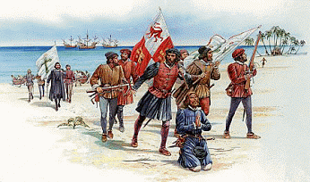
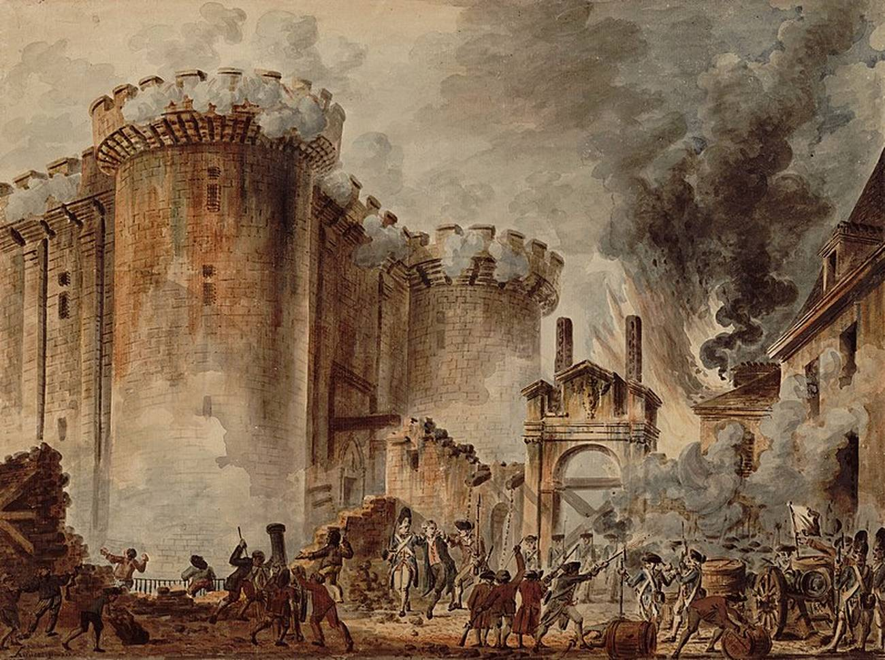

El Clamor de la Libertad y la Lucha por la Independencia
La tercera estrofa del Himno Nacional de Honduras marca un cambio dramático en la narrativa, pasando de la llegada idealizada del explorador a la dura realidad de la dominación colonial. Esta estrofa es un relato de opresión y pérdida, y su propósito es recordar el sufrimiento del pueblo hondureño durante los tres siglos de yugo español. Es una estrofa que evoca un sentimiento de dolor y un grito silencioso de frustración, preparando el escenario para la posterior lucha por la libertad.
El verso, "Por tres siglos tus hijos oyeron el mandato imperioso del amo;", establece el periodo y el tono de la estrofa. "Tres siglos" es una referencia directa al tiempo que duró el Virreinato de Nueva España y la Capitanía General de Guatemala, del cual Honduras formaba parte. La frase "el mandato imperioso del amo" es una descripción clara y contundente del tipo de gobierno que se impuso: un régimen autoritario y despótico. El uso de la palabra "amo" no es casual; subraya la relación de servidumbre y esclavitud a la que fue sometido el pueblo, despojándolos de su dignidad y libertad.
El siguiente verso, "por tres siglos tu inútil reclamo en la atmósfera azul se perdió;", profundiza en el sentimiento de impotencia. El "inútil reclamo" simboliza los levantamientos, las quejas y las súplicas del pueblo indígena y de los mestizos por un trato justo, por el respeto a sus derechos y a su tierra. Sin embargo, todos estos intentos fueron en vano, se perdieron en el vasto e indiferente cielo. La "atmósfera azul" que en la primera estrofa era un símbolo de la belleza natural, aquí se convierte en un testigo silencioso de la opresión, un vasto espacio donde las voces de los oprimidos no encontraban eco ni justicia. Esta imagen refuerza la desesperanza de la situación.
Pero la estrofa da un giro abrupto con el verso, "pero un día de gloria tu oído percibió, poderoso y distante". La palabra "pero" actúa como un punto de inflexión, una luz al final del túnel. "Un día de gloria" es una referencia al amanecer de un nuevo ideal, una época de cambio que despertaría la conciencia del pueblo. Este verso introduce la esperanza y la posibilidad de un futuro mejor, lejos de la opresión. Lo que la patria "percibió" no fue un clamor local, sino un sonido "poderoso y distante" que venía de lejos, lo que lo hace aún más significativo. El himno sugiere que la inspiración para la libertad no nació únicamente en el país, sino que llegó desde el exterior.
El himno cierra con los versos "que allá lejos, por sobre el Atlante indignado rugía un león.". Esta es la imagen más poderosa de la estrofa y un claro símbolo de la Revolución Francesa. El "león" representa al pueblo francés, que se alzó contra la monarquía. La palabra "rugía" evoca la fuerza y la furia de su lucha, un grito de libertad que resonó en todo el mundo. La frase "por sobre el Atlante" (el Océano Atlántico) enfatiza que las ideas de libertad, igualdad y fraternidad que surgieron en Francia cruzaron el océano e inspiraron a los pueblos de América a luchar por su independencia. El himno rinde homenaje a este evento histórico como el catalizador que encendió la chispa de la rebelión en Honduras y en toda la región.
Letra
Era inútil que el indio tu amado,
se aprestara a la lucha con ira,
porque envuelto en su sangre Lempira
en la noche profunda se hundió;
y de la épica hazaña, en memoria,
la leyenda tan sólo ha guardado
de un sepulcro el lugar ignorado
y el severo perfil de un peñón.